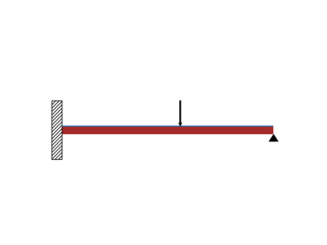
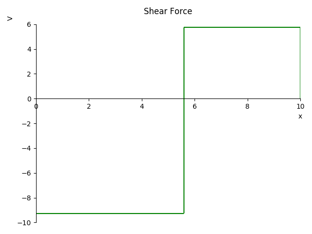
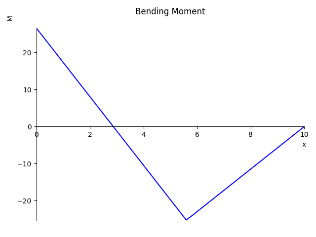
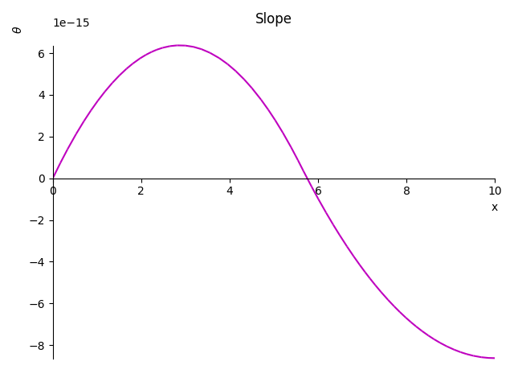
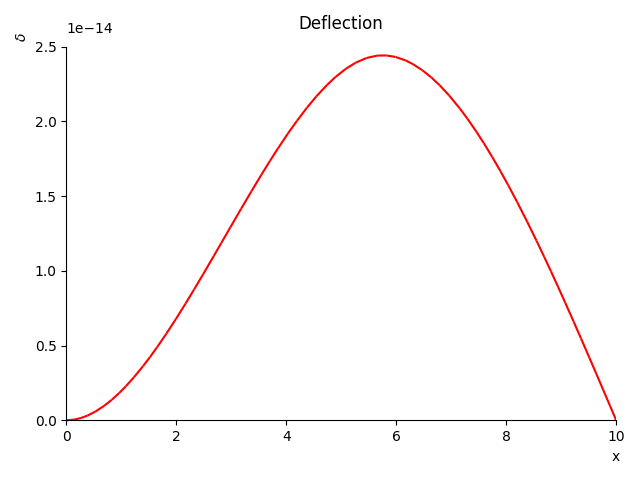

Report prepared in total time: {{ time }} seconds.
General Loading Results are displayed here
Beam Properties
Beam Length: {{ blen }} m
Elastic Modulus: {{ E }} Pa
Second Moment of Area: {{ I }} m4
The following image is for representative purposes only. There may be discrepancies with the actual loading conditions. Please check the loading function for the correct loads.
Shear force loading results are displayed here

Shear Force Function: {{ sf_func }}
{% if max_sf_loc>=0 %}
Maximum Shear Force:
Force: {{ max_sf }} N
Location: {{max_sf_loc }} m
{% else %}
Maximum Shear Force:
Force: N/A. Calculation timed out.
Location: N/A. Calculation timed out.
{% endif %}
Bending moment results are displayed here

Bending Moment Function: {{ bm_func }}
{% if max_bm_loc>=0 %}
Maximum Bending Moment:
Moment: {{ max_bm }} Nm
Location: {{max_bm_loc }} m
{% else %}
Maximum Shear Force:
Force: N/A. Calculation timed out.
Location: N/A. Calculation timed out.
{% endif %}
The slope of the deflected beam is plotted here

Slope Function: {{ slope_func }}
Deflection of the beam is plotted here...

Deflection Function: {{ defl_func }}